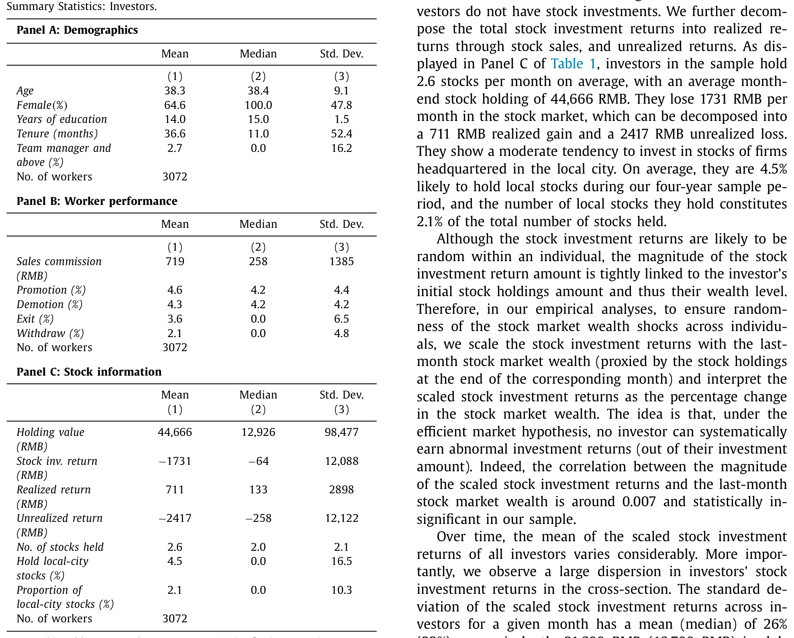
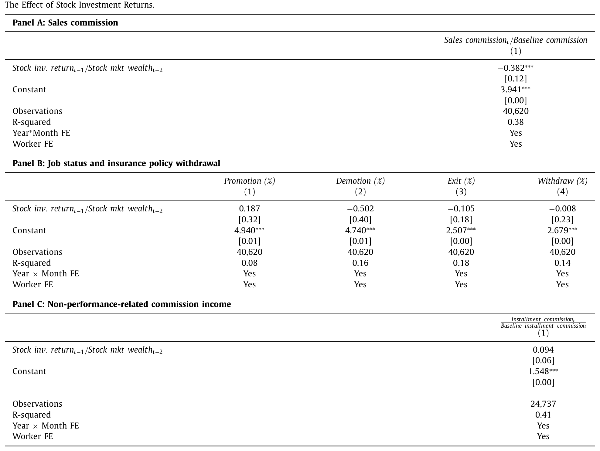
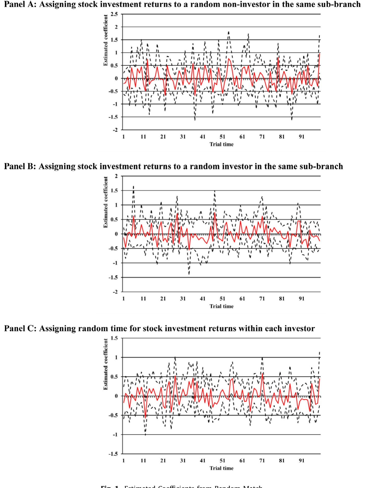
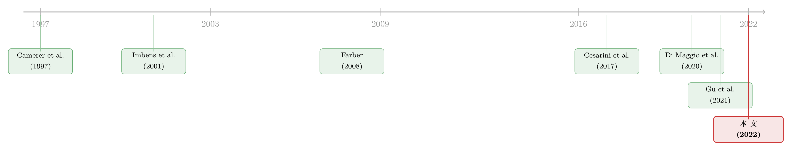

股票替你赚的钱，悄悄偷走了你下个月的力气
本文读的是 Li, Qian, Xiong & Zou (2022, Journal of Financial Economics)：把同一个人的炒股账户和工作业绩按月对在一起后发现，上个月股票投资收益每多涨 10%，这个月的工作产出就下降 3.8%。这个反应很短命（只对上一个月的收益有反应），而且当总收入触到某个「参照点」时更强——它指向的不是教科书里的生命周期平滑，而是带短期心理账户的参照点依赖。
1 一个被忽略的问题：股市涨了，你会更努力，还是更想歇？
先讲一个几乎所有人都见过、却很少有人认真想过的场景。
这个月股市行情不错，你账户里的股票替你「凭空」多挣了一笔钱。第二天清晨闹钟照常响起，你要去上班——你会因为口袋更鼓而干劲更足，还是会想：反正这个月的收成已经够了，活儿少干一点也无妨？
这听起来像一个心理学的小问题，但它其实牵动着一根很粗的宏观链条。美国家庭的直接与间接持股，占其金融资产的 36%，持有美股总市值的九成以上，规模约 $34.2 万亿。一旦股市波动，财富随之起落，而财富又会反过来改变家庭的真实决策——这正是 Poterba (2000) 反复强调的、股票市场通往实体经济的家庭传导渠道。过去几十年里，研究者把这条渠道的「消费」一端挖得很深：股市涨了，人们更敢花钱。
但家庭的消费里，除了买东西，还有一样东西叫闲暇。享受闲暇的方式，就是少干活。于是一个自然的问题浮出水面：财富冲击之后，人们除了多消费，会不会也顺手「多歇着」、少供给一点劳动？
这恰恰是被忽略的那一半。而且它不仅是漏掉的一块拼图，它的方向本身还不那么显然。
2 张力所在：生命周期模型 vs. 短期心理账户
为什么说「不显然」？因为标准理论给出的答案，平淡得几乎让你提不起兴趣。
生命周期劳动供给模型 (lifecycle labor supply) 会告诉你：一笔财富冲击，理性人会把它对应的闲暇（或收入）反应，摊薄到余下的整个人生里去慢慢享受。换句话说，这个月股票多赚的一点钱，理论上只会让你今后几十年每个月各少干「极其微小」的一点活——小到根本测不出来。文中用 CHFS (2015) 做了个粗算：一个 42.2 岁、距退休还有 17.8 年的代表性投资者，其股票财富折算到余生每个月的收入里，只占大约 4%（\(=1.34 \times \tfrac{1}{17.8}\)）。按生命周期逻辑，劳动供给的月度反应应该近乎于零。
可是，股市是按天、按月剧烈波动的，而工作合同往往按年、按季才调整。当一个人面对的是高频、反复的财富冲击时，他真的会像理性模型假设的那样，把每一次涨跌都冷静地折算进余生吗？
接着，一个更有意思的可能性来了。如果人们持有的是一个短期的心理账户 (short-term mental account)，那么参照点依赖 (reference dependence) 理论预测：当本月收入触到某个「参照收入」时，人们就会在短期内显著地减少劳动供给——干够了，今天就收工。这正是 Camerer et al. (1997) 在纽约出租车司机身上讲过的那个著名故事：司机们仿佛给自己定了个「日收入目标」，挣够了就早早收车回家。
两套理论给出的预测，差别是「定性」的：生命周期模型说反应持久而微弱；参照点依赖说反应短促而集中。谁对谁错，不能靠嘴说，得靠数据把这两种时间形态分开。
3 测量的拦路虎：为什么这件事这么难做
但真正关键的一步，是先得把数据问题解决掉——而这恰恰是这条文献几十年迟迟没有直接答案的原因。
要识别「股市财富 → 劳动供给」的因果，你会立刻撞上两堵墙。
第一堵墙是混杂。 股市表现和劳动选择，背后都被一大堆宏观与地方经济条件牵着走。经济好，股市涨，家庭其他财富（比如房子）也涨，而后者会独立地改变人的工作决策。于是你在总量上看到「股市涨、劳动降」的相关，根本说不清是哪个力量在起作用。
第二堵墙是测量。 就算你想看个体层面的反应，劳动供给本身就极难量化。参与不参与（外延边际）对高频股市波动通常不敏感；而在内涵边际上，大多数职业的「工资」是按月、按年发的固定数，根本不会随你今天多干两小时、明天少干一小时而灵敏变化。earnings 作为劳动的代理，太钝了。
正因如此，过去的研究只能退而求其次，去找那些「收入直接等于劳动」的特殊职业——出租车司机、农业工人（Camerer et al., 1997；Farber, 2008；Graff Zivin and Neidell, 2012；Agarwal et al., 2015）。但这些研究测的是工资率冲击对劳动的影响，而不是财富（非劳动收入）冲击。
于是问题收敛成一句话：有没有一种数据，能把同一个人的股票财富波动和他的高频劳动产出，干净地对在一起？
4 巧妙的设定：零底薪的保险代理人
作者找到的答案，藏在中国的保险销售队伍里。这是全文最漂亮的一步。
中国的寿险公司和销售代理人签的是代理合同，因此不受最低工资约束——说白了，保险代理人零底薪，收入完全靠业绩。而他们最大的一块收入，是销售佣金 (sales commission)：由于采用计件制 (piece-rate)，每卖出一张保单，佣金是保费的一个固定比例。
这意味着什么？意味着销售佣金这个数，逐月变动，且直接、干净地刻画当月的工作产出与劳动供给。它正好绕开了第二堵墙——你终于有了一个高频、连续、随努力灵敏变化的劳动产出测度。
更妙的是falsification的素材也是现成的。代理人还有第二块收入，叫续期佣金 (installment commission)，来自往年卖出的长期保单。这块钱和「本月努不努力」毫无关系——它天然是一个安慰剂检验的对象。
数据这样拼起来：
- 工作端：一家中国领先寿险公司、某东部大城市分公司，2013–2016 年全部销售代理人的月度业绩。这座城市有 700 万常住人口、贡献全国约
1%的 GDP；分公司下设12个支公司，各覆盖城市一片区域。样本里至少拿到过一个月正佣金的员工有17,486人。 - 投资端：把这些代理人去身份化地匹配到他们在深圳证券交易所 (Shenzhen Stock Exchange, SZSE) 的全部股票投资——按「证券-月」层级，能看到每只股票的月末市值、当月买入/卖出的金额与股数。
- 这家保险公司本身没在 SZSE 上市，所以代理人的炒股和自己雇主的股价无关，省去一层内生性。
17,486 人里有 3,120 人（18%）在样本期内炒过股——这个比例和 2018 年中国城镇人口的持股率恰好都是 18%。剔除掉 48 个在任一月份买入、卖出或持仓市值 ≥ 500 万 RMB 的「巨富」投资者（他们更可能有内幕信息或影响股价的能力），最终样本是 3,072 个投资者。所有月度产出和投资收益变量在 0.5 与 99.5 分位做了缩尾 (winsorize)。
这群人长什么样？65% 是女性，平均年龄 38 岁，受教育 14 年，平均在公司干了 37 个月，只有 2.7% 做到团队经理及以上。他们月均销售佣金 719 RMB；样本期内的晋升率 4.6%、降级率 4.3%、离职率 3.6%、保单退保率 2.1%。

Table 1
5 识别策略：固定效应、随机匹配，和一连串「关不掉」的反应
有了数据，回归本身反而朴素。作者在员工个体层面，把销售佣金对上一个月的股票投资收益做回归，控制个体与年-月两个固定效应：
标准误按个体与时间双向聚类 (two-way clustering)，方法上对应 Cameron, Gelbach and Miller (2011) 与 Thompson (2011)。
先看一眼「未经身份识别」的总量证据作为热身：在加总层面，股市加权平均收益每涨 1%，样本里员工投资者相对非投资者的总销售佣金就减少 2.01%。方向已经出来了。
而个体层面的基准结果更干净：上一个月的股票投资收益每升 10%，下一个月的销售佣金就降 3.8%，统计与经济意义都显著。换算成弹性，\(\beta \approx -0.38\)。并且这个负向反应当股票收益相对基准工作收入更高时更强——这是参照点依赖的第一道伏笔。

Table 2
接着，一个老练的读者立刻会反问：这会不会就是第一堵墙——地方经济条件在同时推动股票收益和保险销售？固定效应吸收了宏观趋势，却未必吸得干净更地方层面的冲击。比如本地经济火热，既抬高了股价，又给了人们更好的别处就业机会、或把客户的钱从保险挪去直接炒股——那么保单销售下降，并不意味着「少供给劳动」。
作者用一招随机匹配 (random match) 漂亮地回击了这个质疑。每个投资者都在 12 个支公司之一工作；把他这个月的股票投资收益，随机指派给同一支公司里的另一个非投资者或投资者——这两人共享最地方层面的经济基本面，面对同一拨潜在客户。如果负向关系真是地方经济或保险需求在作祟，那么用随机指派的「假收益」也应当跑出一个类似的负相关。
结果呢？这个经验关系近乎为零。如图 1 所示，随机匹配跑出的系数密集地堆在零附近，而真实匹配的系数明显偏负、落在分布的尾巴上。混杂解释，被基本排除。

Figure 1: Estimated Coefficients from Random Match
然后作者继续「拧螺丝」，从多个角度逼近一个纯粹的、特异 (idiosyncratic) 的收益变异：
- 只用非本地股票的投资收益——它们和本地经济关系微弱——反应依然强劲；
- 在低投资技能（其收益更可能是噪声/运气）的投资者里，佣金的负反应依旧负且显著。
更关键的，是一连串「关不掉」的安慰剂检验，把「这究竟是不是劳动产出的反应」钉死：
- 上月股票收益不预测晋升、降级或离职的概率；
- 不预测产品质量的下降——客户的保单退保没有变化；
- 那块和当月努力无关的续期佣金，对上月股票收益毫无反应。
最后一条尤其要命：如果代理人是因为地方经济变差才整体业绩下滑，续期佣金不会安然无恙。它纹丝不动，恰恰说明被影响的是「当月新努力」，而不是别的什么。
6 反转：为什么这是参照点依赖，而不是生命周期平滑
到这里，因果基本立住了。但全文真正的「核心」还没揭晓——这股负反应背后，是哪套机制？
回到第 2 节那个定性分叉。生命周期模型说反应应当持久：一笔财富冲击会被摊到今后许多期，于是这个月、下个月、再下个月，都该看到一点点。Imbens et al. (2001) 的彩票研究、Cesarini et al. (2017) 的瑞典彩票研究，看到的正是这种持久反应。
可这篇论文看到的是短命的：销售佣金只对上一个月的股票收益有反应，再往前的收益就不灵了。于是反转出现——这与生命周期的持久预测不符，却与参照点依赖严丝合缝：人有一个短期心理账户，当本月收入触到参照点，就在短窗口内减少劳动供给，过了这一阵又回到原样。
作者还补上一记直接证据：当上一个月的总收入已经触到参照收入时，销售佣金对股票收益的负反应显著更强。这正是「干够了就收工」的微观刻画。
理解了「短命」这个性质，还顺带修正了我们对效应大小的认知。单看即时反应，量级和 Cesarini et al. (2017) 等文献里的财富效应相当；但由于反应短促、不会层层累积，累计效应反而更小。这是一个诚实而重要的限定。
别把「短命」误读成「不重要」。它重要在于：股市是高频反复波动的，这意味着这条劳动供给渠道会被反复触发，像一连串小脉冲，而不是一次性的大冲击。
作者也排掉了几个相邻解释。一是投资者分心 (investor distraction)（DellaVigna and Pollet, 2009；Hirshleifer et al., 2009）：如果是分心，反应应当随注意力代理变量变化，但它没有。二是流动性需求：控制住已实现收益 (realized gains) 后，对总投资收益的产出反应量级与显著性都不变；在流动性需求较低的月份，反应依然显著——说明这不是「赚了钱要去取现花掉、顺便请假」那么简单的故事。横截面上，反应在年长、受教育更多的员工里更强，在性别与收入间则大体相似。
（关于「在真实场域里识别参照点依赖」这件事，可参见《用真金白银投出来的前景理论：从基金资金流里「反推」投资者偏好》；而把「财富冲击如何改变人的努力/人力投入」放到另一类资产上看，则可对照《同样欠着债，为什么「学门手艺」比「多上一天班」更扛得住？》。）
7 文献脉络
把这条线索拉直了看，它的来路其实很清楚。
最早的一支，是把参照点依赖搬进劳动供给的田野研究。Camerer et al. (1997) 用纽约出租车司机讲了「日收入目标」的故事，Farber (2008) 对此再做检验，Agarwal et al. (2015) 把场景换到新加坡的出租车司机。但请注意——这些研究测的都是工资率（劳动收入）冲击对当期劳动的影响。
另一支，是财富（非劳动收入）冲击 → 劳动供给。Imbens et al. (2001) 用彩票中奖者，Cesarini et al. (2017) 用瑞典彩票，干净地估出了财富对劳动供给的因果——但它们看到的是低频、持久的反应。再近一些，Li et al. (2020) 用房产财富的断点设计、Gu et al. (2021) 用房市冲击看「偷懒」，把战场推向了房地产财富。
还有一支平行的，是股市财富 → 真实家庭决策：Poterba (2000) 奠定了「股市财富与消费」的问题，Di Maggio et al. (2020) 估计股市收益对消费的因果，Choi et al. (2020) 看股市对人力资本（专业选择）的影响。

这篇论文站在三条线的交汇处，并补上了所有人都漏掉的那一格：它是第一篇直接估计「股市财富变化 → 劳动供给」因果的研究；它用月度个体股票收益，刻画的是高频、反复的财富冲击；而它发现的短命反应，把参照点依赖从「工资率冲击」推广到了「财富（非劳动收入）冲击」之上。一句话——它给股市通往实体经济的传导，添了一条全新的劳动供给渠道。
8 评论与延伸（Q&A + 研究方向）
(a) 几个可能的疑问
Q：销售佣金真能代表「劳动供给」吗？万一只是客户那个月不爱买保险？
这正是作者花最大力气堵的口子。计件佣金按定义随「卖出保单数」变动，是产出的直接测度；而随机匹配（用同支公司他人的假收益跑出近零系数）、非本地股票、低技能投资者三招，合力排除了「地方需求侧」的解释。再加上续期佣金和退保率纹丝不动，结论指向的是代理人自己当月少干了活，而非客户端的需求变化。
Q：这和「财富效应推动消费」是一回事吗？
不是。消费是花掉手里的钱；这里讲的是少挣本可挣到的钱——即用闲暇替代劳动。它是家庭对财富冲击反应里被长期忽略的另一半，而且因为收入端和供给端在这个职业里合二为一，才第一次被高频地量出来。
Q：会不会是「赚了钱要去取现、办手续，所以请假」这种流动性故事？
作者直接控制了已实现收益 (realized gains)，核心结果量级与显著性不变；在流动性需求较低的月份，负反应依然显著。所以不是简单的「取钱花钱顺便翘班」。
Q：为什么我该信这是参照点依赖，而不是生命周期模型？
因为时间形态对不上。生命周期模型预测持久反应（彩票文献里看到的正是如此），而这里佣金只对上一个月收益有反应、且当收入触到参照点时更强——这是短期心理账户的特征，不是跨期平滑的特征。
Q：样本是中国一家寿险公司的零底薪代理人，外推性够吗？
这是把双刃剑：零底薪、纯计件让测量极干净，但人群特殊。作者做了外延性检验——结果不由可能的兼职者驱动，不限于高收入波动者，在更能代表中国投资家庭的加权样本里也成立，也不由样本期的极端行情驱动。但「能否外推到有底薪、按月领固定工资的白领」，仍需别的场景去验证。
Q：3.8% 这个数，到底算大还是算小？
即时看，量级与 Cesarini et al. (2017) 等财富效应文献相当；但由于反应短命、不层层累积，累计效应反而更小。换言之，单次冲击不小，但它不会像永久收入冲击那样在余生里持续发酵。
(b) 几个可能的研究问题与提案
1. 把同一套逻辑搬到「债市财富」上。 【经济故事】债券（尤其信用债）的月度收益同样高频波动，但波动结构与股票截然不同（利率、信用利差两条腿）。如果参照点依赖成立，持债家庭在「信用利差收窄、债券账面增值」的月份，是否也会短暂地少供给劳动？利率冲击与信用冲击谁更触发「收工」效应，能进一步分离机制。 【可行性】中：需要把个体债券持仓（或债基持仓）与高频劳动产出对在一起，这类微观链接数据稀缺；在有零工/计件平台数据的环境里相对 doable。
2. 外资持有人冲击下的本地劳动供给。 【经济故事】当一只股票被纳入 MSCI、或沪深港通额度放开，外资买入抬高了本地散户的账面财富。能否用「指数纳入」作为对持股家庭财富的准外生冲击，估计其对该家庭劳动产出的短期影响？这把本文的「特异收益」识别，换成一个更可信的需求侧外生变异。 【可行性】中：纳入事件是干净的外生冲击，但仍需个体「持股 × 劳动产出」的链接，识别上比本文更强，数据门槛是瓶颈。
3. 高频财富冲击与「服务质量」的更细测度。 【经济故事】本文用退保率说明产品质量没下降，但「少干活」是否换来了搜寻更省力的客户、或更短的服务时长？产出的「数量」降了，质量与构成是否也在悄悄变？ 【可行性】高（若有客户层级数据）：用保单的客户特征、首期保费规模、客户留存做异质性分解，识别上沿用本文框架即可。
4. 反向的「亏损」冲击：参照点的非对称。 【经济故事】参照点依赖往往伴随损失厌恶。股票上月亏钱时，代理人会不会反而更卖力（去把收入补回参照点）？若反应非对称，将是参照点机制比生命周期机制更强的证据。 【可行性】高：直接在本文样本里按收益正负分样本、或加入收益的分段项即可，是最 doable 的一个延伸。
9 我的判断
这篇论文的贡献，干净利落地落在一句话上：它第一次为「股市财富 → 劳动供给」提供了因果估计，并且靠一个零底薪、纯计件的职业，把一向测不准的劳动产出测准了。随机匹配这一招尤其漂亮——它用「同支公司、同客户群」把地方经济条件这个最难缠的混杂，做成了一个近乎可证伪的安慰剂。而「短命 + 触到参照点更强」这组事实，把参照点依赖从工资率冲击推广到了财富冲击，这是真正有分量的概念推进。
要说对识别的担忧，我有两点。其一，「上月收益」与「本月产出」之间，仍可能存在个体层面时变的隐藏状态：比如一个人这阵子家里出了事，既疏于盯盘（收益偏特异）又疏于跑业务。作者用已实现收益、流动性需求做了缓解，但这类「同时影响投资专注度和工作投入」的个人冲击，固定效应吸不干净。其二，外推性确实受限于这个人群——零底薪让佣金成了完美的产出代理，但也意味着这些人的「劳动-收入」绑定远比普通受薪者紧；对有底薪、按月发薪的劳动者，参照点的触发条件可能很不一样。
后续我最想看到的，是把这套「高频财富冲击 → 短期劳动供给」的识别，搬到信用债/外资持有人这类我更关心的场景里去（见上文提案 1、2），并直接检验亏损侧的非对称反应——那将是判定「这究竟是参照点依赖，还是别的什么」的最锋利的一刀。
参考文献
- Agarwal, S., Diao, M., Pan, J., Sing, T.F. (2015). Are Singaporean cabdrivers target earners? Working paper.
- Camerer, C., Babcock, L., Loewenstein, G., Thaler, R. (1997). Labor supply of New York City cabdrivers: One day at a time. Quarterly Journal of Economics 112(2), 407–441.
- Cameron, C., Gelbach, J.B., Miller, D.L. (2011). Robust inference with multiway clustering. Journal of Business & Economic Statistics 29(2), 238–249.
- Cesarini, D., Lindqvist, E., Notowidigdo, M.J., Östling, R. (2017). The effect of wealth on individual and household labor supply: Evidence from Swedish lotteries. American Economic Review 107(12), 3917–3946.
- DellaVigna, S., Pollet, J.M. (2009). Investor inattention and Friday earnings announcements. Journal of Finance 64(2), 709–749.
- Di Maggio, M., Kermani, A., Majlesi, K. (2020). Stock market returns and consumption. Journal of Finance 75(6), 3175–3219.
- Farber, H.S. (2008). Reference-dependent preferences and labor supply: The case of New York City taxi drivers. American Economic Review 98(3), 1069–1082.
- Graff Zivin, J., Neidell, M. (2012). The impact of pollution on worker productivity. American Economic Review 102(7), 3652–3673.
- Gu, Q., He, J., Qian, W., Ren, Y. (2021). The effect of wealth shocks on shirking: Evidence from the housing market. Working paper.
- Hirshleifer, D., Lim, S.S., Teoh, S.H. (2009). Driven to distraction: Extraneous events and underreaction to earnings news. Journal of Finance 64(5), 2289–2325.
- Imbens, G.W., Rubin, D.B., Sacerdote, B.I. (2001). Estimating the effect of unearned income on labor earnings, savings, and consumption: Evidence from a survey of lottery players. American Economic Review 91(4), 778–794.
- Li, H., Li, J., Lu, Y., Xie, H. (2020). Housing wealth and labor supply: Evidence from a regression discontinuity design. Journal of Public Economics 183, 104139.
- Li, T., Qian, W., Xiong, W.A., Zou, X. (2022). Employee output response to stock market wealth shocks. Journal of Financial Economics 146(3), 779–796.
- Poterba, J. (2000). Stock market wealth and consumption. Journal of Economic Perspectives 14(2), 99–118.
- Thompson, S.B. (2011). Simple formulas for standard errors that cluster by both firm and time. Journal of Financial Economics 99(1), 1–10.